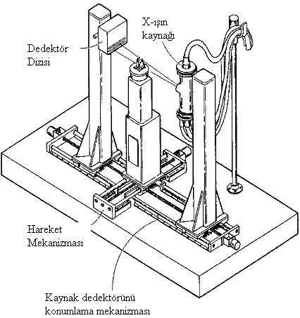
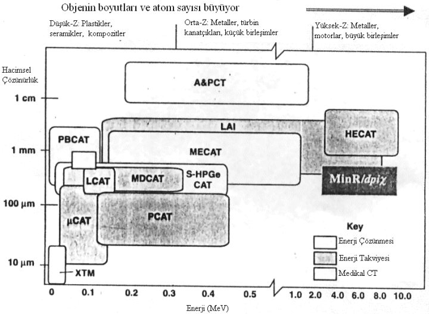
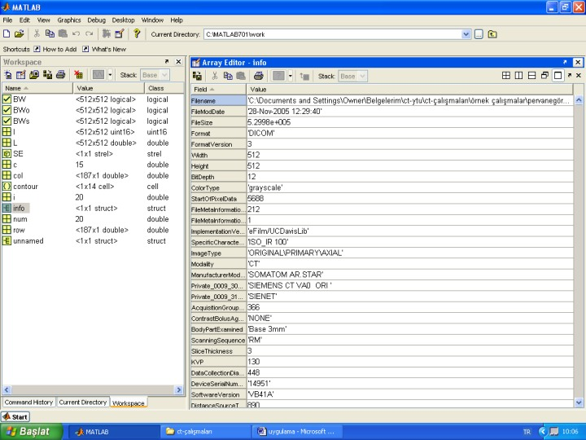
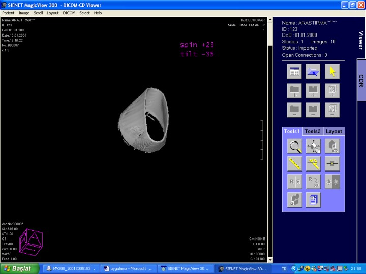

|
Ünal Uslu
Ekim 2008, Ýstanbul
Özet
Bu çalýþmada; karmaþýk iç ve dýþ yapýya sahip parçalarýn, CT cihazýnda taranarak, 3D modelinin ortaya çýkarýlmasý böylece konvansiyonel ölçme cihazlarýyla yapýlamayan boyutsal ölçümün ne kadar yüksek bir doðrulukla elde edilebileceði araþtýrýlmýþtýr.
Uygulama için; önce numune parça spiral tomografide taranarak, kesit görüntüleri elde edilmiþtir. Bu raster görüntüler üzerinde, MATLAB yardýmýyla çeþitli görüntü analizi yöntemleri uygulanmýþ ve PASCAL dilinde yazýlan bir program aracýlýðýyla da 2D konturlarýn vektör geometrisi çýkarýlmýþtýr. Daha sonra bu verilerden faydalanýlarak Mastercam tasarým yazýlýmýnda nesnenin birebir yüzey CAD modelinin elde edilmesine çalýþýlmýþtýr. Ortaya çýkan sonuçlar, hem MIMICS tersine mühendislik yazýlýmýnda ve hem de COORD3&CAPPS CMM yazýlýmý ile analiz edilerek karþýlaþtýrýlmýþtýr.
Anahtar Kelimeler: Tersine Mühendislik (RE), Bilgisayarlý Tomografi (CT), Sayýsal Görüntü Ýþleme (DIP), Bilgisayar Destekli Tasarým (CAD)
Giriþ
Günümüzden 110 yýl önce Willhelm C. Röntgen'in X-ýþýnlarýný buluþu týpta yeni bir dönemin baþlamasýna neden olmuþtur. Bilgisayarlý tomografinin matematik prensiplerinin 20.yy baþlarýnda Radon tarafýndan ortaya konmuþ olmasý raðmen, teknolojik uygulamalarýna daha geç baþlanmýþtýr. 1960'larýn sonlarýna ve 1970'lerin baþlarýna doðru G. Hounsfield, Ýngiltere'de ilk ticari X-ýþýnlý CT sistemini -CAT (Bilgisayar Destekli Tomografi) tarayýcýsýný- geliþtirmiþtir. 1970'lerde bilgisayarlý tomografinin endüstriyel amaçlý ve araþtýrma uygulamalarý için kullanýmý sýnýrlýydý bu yüzden çalýþmalar medikal sistemler üzerine yoðunlaþmýþtýr. Cisimlerin kesilmeden muayenesini saðlayan radyolojik görüntüleme yöntemlerinden olan "röntgen" ile "bilgisayarlý tomografi" arasýndaki en büyük farklýlýk; incelenen parçanýn iki boyutlu izdüþümü deðil, kesit görüntüsünün elde edilebilmesidir. Böylece üç boyutlu uzayda numunenin hem dýþ hem de iç yüzeyinin þekli hakkýnda bilgi sahibi olmak mümkündür. 1970 ve 80'li yýllarda dijital görüntü iþleme teknolojisindeki ilerleme ve bilgisayar destekli tasarým alanýnda üretilen yeni yazýlýmlar sayesinde tomografiden alýnan verilerin 2D ve 3D boyutlu ölçüm analizi fevkalade kolaylaþmýþtýr.
Endüstrinin artan ihtiyaçlarýný karþýlamak üzere, 3D ölçme tekniklerine olan ilgi ve iþletmelerin bu konudaki yatýrýmlarý giderek artmaktadýr. Gerek mühendislik uygulamalarý ve imalat prosesleri gerekse endüstriyel tasarým ve ürün geliþtirme faaliyetleri hýzlý, hassas ve kullanýcý dostu ölçme sistemlerine ihtiyaç duymaktadýr. Özellikle dijital görüntüleme teknikleri sayesinde iþ parçasýna ait nokta verilerinin tek tek toplanmasý ile imalat toleranslarýný doðrulama, yeniden imal edilecek parçalar için geometri belirleme ve deformasyon problemleri görüntüleme gibi pek çok tersine mühendislik ve muayene iþlemleri mümkün olmaktadýr. Günümüz CAD/CAM uygulamalarýnda çoðunlukla bilgisayar ile oluþturulan üç boyutlu modelden hareket edilerek uygun CNC veri oluþturulmasý yoluyla imalat aþamasýna geçilmektedir. Buna alternatif bir uygulama olarak "tersine mühendislik" diye tanýmlanan yöntem de mevcuttur. Esasen bu yöntemi genel anlamý ile ele aldýðýmýzda, elde mevcut olan mamul parçadan hareketle ve imalat prosesindeki iþlem sýrasýnda geriye doðru gidilmek suretiyle, operasyonlarýn tümünün çözümlenmesine yönelik çalýþmalarýn bütünü olarak görmek gerekmektedir.
Konvansiyonel ölçme cihazlarýyla tanýmlanamayan girift yüzeylere sahip parçalarýn CAD datasýnýn hýzlý ve nispeten hassas bir þekilde oluþturulmasý için en uygun çözüm bir CT tarayýcýsýndan faydalanmaktýr.
Medikal görüntülemenin fiziði ve bilgisayarlý tomografi
Tomografi klinik uygulamalarýn vazgeçilmez diagnostik aygýtýdýr. CT; vücudu dilim dilim bölmek suretiyle iç derinliklerine kadar görüntüleme imkaný sunan yegane sistemdir. 1972'de EMI Mark I adlý ilk CT tarayýcý baþ inceleme amaçlý olarak kullanýldýðýnda 80x80 piksel çözünürlüðünde (3 mm.lik pikseller) görüntü elde edilmiþtir. O zamanlar her bir dilimin taranmasý için 4,5 dakika ve geriçatma için 1,5 dakika geçmesi gerekiyordu. Geometrisi, detektör teknolojisi, çoklu detektör dizileri ve X-ýþýný tüplerindeki teknolojik geliþmeler tarama operasyonlarýnýn saniyeler mertebesine inmesine sebep olmuþtur. Yaptýklarý çalýþmalardan ötürü Hounsfiled ve Gormack'a 1979'da Nobel Ödülü verilmiþtir.
Modern CT'ler sadece týp medikal sahada deðil tahribatsýz deneyler ve maden analizinde de faydalý hizmetler vermektedir. Spiral tomografinin geliþimi ancak 1990'larýn baþlarýnda gerçekleþmiþtir. Petrol endüstrisi, medikal tip tarayýcýlarý ilk kullanan sektör olmuþtur. Bu tür cihazlar, hem hastane hem de iþletmelerin laboratuarlarýnda örneðin, karbon kompozit malzemelerin ve hafif alaþýmlý metallerin iç yapýlarýnýn, tahribatsýz muayenesinde kullanýlmýþtýr. Endüstriyel CT sistemlerini, medikal sahada kullanýlanlardan ayýran en büyük fark; daha büyük ve yoðun malzemeleri, yüksek enerjili X-ýþýn kaynaðýyla, daha yüksek çözünürlükte ve imalat ortamýnda analiz edebiliyor olmasýdýr. Askeri kaynaklý taleplerin de etkisiyle; 1970'lerin sonlarý ve 1980'lerin baþlarýna doðru büyük roket motorlarý, uçak motorlarýnýn küçük ama hassas döküm parçalarý inceleme programýna alýnmýþtýr.
Tomografi Tarayýcýsýnýn Ýç Yapýsý ve Endüstriyel Tomografi Cihazlarý
CT tarayýcýsýndan görüntü üretmek için temel olarak; X-ýþýný jeneratörü, X-ýþýn tübü, kolimatör, "gantry" düzeneði, dedektörler, nesneyi taþýyan tabla ve görüntüleme ekraný, veri kayýt birimlerini içeren bir teknolojik donanýma gerek duyulur. Þekil 2.1'de 300 mm çapa ve 600 mm boya kadar olan büyük endüstriyel amaçlý parçalarýn tahribatsýz muayenesi ve boyut analizi için tasarlanmýþ bir tomografi görülmektedir.
Veri toplama geometrisi bakýmýndan endüstriyel tomografiler üç ana sýnýfa ayrýlýr:
- Birinci nesil; ayrýk ýþýn sýnýrlayýcýlý, ilerleyen/dönen tipte tek dedektörlü tarayýcýlardýr.
- Ýkinci nesil; ince yelpaze huzmesi þeklinde sýnýrlandýrýlmýþ doðrusal dedektör dizisinden oluþur.
- Üçüncü nesil; geniþ açýlý konik ýþýn demeti ve alan dedektörü yardýmýyla tarama yapar. Birinci nesilden, farký yatay hareket yerine olduðu yerde parçanýn dönmesi yada tüp/dedektör sisteminin parçanýn etrafýnda dolanmasýdýr.
Endüstriyel nesneler, medikal sahadan çok daha geniþ alana yayýlmaktadýr. Ýncelenecek parça boyutlarý 1 mm.den 100 cm.ye kadar uzanýr. Bu malzemeler, X-ýþýný daha az zayýflatan plastik malzemeler olabildiði gibi, plutonyum gibi yüksek zayýflatma katsayýlarýna sahip özel yapýlarda bulunabilir. Böyle geniþ bir enerji ihtiyacý gerektiren malzeme yelpazesi Þekil 2.2'de gösterilmiþtir [Martz ve Schneberk, 2001].

Þekil 2.1 Endüstriyel CT ve DR tarayýcýsý (Dennis, 1992)

Þekil 2.2 CT tarayýcýsýnda, malzemeye göre X-ýþýný enerjisi ve hacimsel çözünürlüðe ait performans diyagramý (Martz ve Schneberk, 2001)
3. Tomografik görüntü verilerinden 3D CAD modelin oluþturulmasýna yönelik uygulama
Bu çalýþmanýn baþladýðý dönemde Türkiye'de bir endüstriyel tomografi cihazý mevcut olmadýðý için, uygulama medikal bir bilgisayarlý eksenel (axial) tomografide gerçekleþtirilmiþtir. Konvansiyonel tarama cihazlarý ile geometrik ölçümü kolaylýkla yapýlamayacak kadar karmaþýk ya da ters açýlý iç ve dýþ yüzeylere sahip parçalarýn seçilmesine dikkat edilmiþtir. Öncelikle numune plastik fön nozulu ve alüminyum motor faný üzerinde deneme çekimleri yapýlmýþtýr.
Tomografiden alýnan dijital görüntüler DICOM formatýnda *.dcm uzantýlý dosyalardýr ve herhangi bir kesitteki görüntü bilgisinin yaný sýra cihazýn özellikleri hakkýnda geniþ bilgi verir (Þekil 3.1).

Þekil 3.1 Tomografiden alýnmýþ bir görüntü bilgisinin, MATLAB penceresindeki görünüþü
3.1 Çekim Parametreleri
Tablo 3.1 Numunelerin tarandýðý tomografinin çekim parametreleri
Tarayýcýnýn Tipi: |
Spiral Tomografi |
X-Iþýn Tüpünün Enerjisi: |
130 kV. |
Yaydýðý Akým: |
63 - 105 mA. |
Alýnan Kesit Sayýsý: |
20 - 25 adet. |
Görüntü Matrisinin Boyutu: |
512 x 512. |
Piksellerin Gri Ton Deðerleri: |
16 bit. |
Dilimler Arasý Mesafe: |
1 - 3 mm. |
Piksel Aralýðý: |
0.36523 mm. |

Þekil 3.2 Tomografide taranmýþ nozulun, cihaza ait yazýlýmla ekranda elde edilen 3-boyutlu "render" görüntü (SIENET MagicView)
Nozul çekimleri Tablo 3.1'de belirtilen çalýþma parametreleri dahilinde gerçekleþtirilmiþtir. Spiral tomografide 1 mm.lik dilimler halinde yapýlan tarama iþlemi sonucu, cihaz üzerinde kullanýlan bir yazýlým yardýmýyla Þekil 3.2'de verilen 3D görüntüler alýnmýþtýr. Bunun yaný sýra, mevcut yazýlým ile kesit resimlerini inceleme, mesafe ölçümü ve zoom iþlemleri yapýlabilmektedir.
|